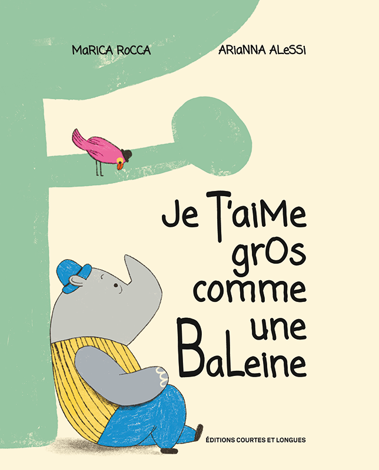

Édition française
Je t'aime gros comme une baleine
Un rhinocéros et un petit oiseau au bec rouge vivent ensemble, très proches l'un de l'autre, mais pas toujours au même rythme. Quand le rhinocéros est occupé, distrait ou lointain, son ami ressent le besoin de lui dire combien il compte pour lui. Fourmi, chat, girafe ou baleine : selon les jours, les animaux deviennent une façon tendre et drôle de mesurer l'amour, l'absence et l'envie d'être ensemble.
Édition française de l'album illustré Mi manchi una balena,
publié en Italie par Lapis Edizioni.